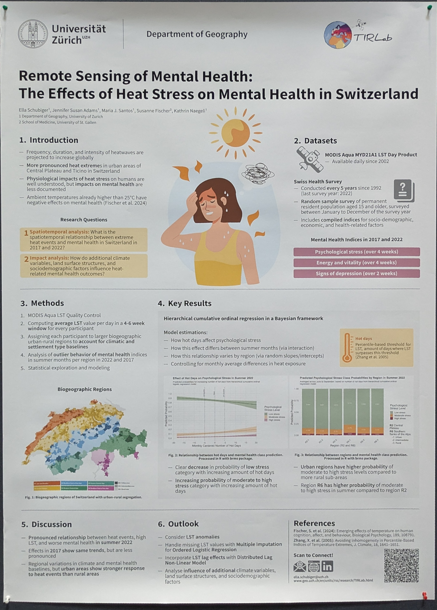

Conference Poster Summaries
Integrating Multisource LiDAR Data for Aboveground Biomass Estimation
Qian Song1, Simon Besnard1, Mikhail Urbazaev1, Benjamin Brede1, Martin Herold1, Mike Sips1
1 GFZ Helmholtz Centre for Geosciences
Research Question / Objective
Developing a foundation model for carbon stock estimation that can be generalized and applied to map below and above ground carbon stocks.
Methods
Integration of spaceborne (GEDI, ICESat-2) and airborne (ALS) LiDAR data. Data processing included noise removal, creation of canopy height models (CHMs), and biomass calculations using allometric equations.
Results
Developed CHMs from both spaceborne and airborne LiDAR data. Allometric equations, initially developed for 50m resolution data, were found applicable to 15m data as well. Presented scatterplots showing correlations between ALS and GEDI derived canopy heights.
Conclusions
The study contributes ALS data to the 3D-ABC foundational model for biomass estimation. The allometric equations are shown to be suitable for lower resolution data.
Utilizing a global reference open dataset AGBref to assess all global biomass maps produced from 2010 to 2025
Arnan Araza¹, Martin Herold¹, Mikhail Urbazaev², Lars Hein¹, et al.
Research Question / Objective
1. Assess how global biomass maps improve over time (2010-2015, 2016-2020, 2021-2025). 2. Compare validation results for a biomass product (CCI Biomass) with yearly versions.
Methods
Compilation of maps and access of AGBref; Map reprojection, merging of tiles; Matching AGBref to map production periods; Harmonization of forest definition/mask; Resampling of maps into 0.1 deg. using mean of all pixels; Use of 0.1 deg. dataset and 'min. plots' filter of AGBref; Map assessment using MD, RMSD over biomass bins; Inter-comparison of maps and analysis over map production periods.
Results
Maps tend to have systematic differences (uniform bias or over-/under-estimation in lower and upper biomass bins). These biases decrease in recently produced maps; bias can be regional.
Conclusions
Not specified in poster
GEDI Structure Metrics as Predictors for Agroforestry Biomass: A Deep Learning Fusion Approach with Sentinel and ALOS
Xi Zhu, Mila Luleva, Yaqing Gou, Acorn, Rabobank (The Netherlands)
Research Question / Objective
Can a deep learning fusion approach using GEDI, Sentinel-1, Sentinel-2, and ALOS data improve the accuracy of agroforestry biomass estimation by including foliage height diversity (FHD)?
Methods
A multitask convolutional neural network (UNet) was developed to predict GEDI-derived structural traits (RH95, CC, FHD) from co-registered raster stacks of Sentinel-1, Sentinel-2, and ALOS data. Model performance was evaluated using R², RMSE, and spatial validation. Late fusion was employed.
Results
Including FHD improved biomass prediction accuracy, increasing R² from 0.69 to 0.74. Airborne LiDAR validation showed strong correlation between modeled and measured GEDI metrics.
Conclusions
The study presents a scalable framework for estimating GEDI structural traits using freely available satellite data. Combining spaceborne lidar with multi-source EO data improves biomass mapping, particularly in regions with sparse in-situ data.
The Timeline Viewer: a web application for intuitive interactive visualisation of time-based data
Eelco Doornbos, Mark Ter Linden, Eelco Verduijn, Kasper van Dam, Jos de Kloe, Gerd-Jan Van Zadelhoff, Royal Netherlands Meteorological Institute (KNMI), De Bilt, The Netherlands
Research Question / Objective
To develop an interactive web application for intuitive visualization and exploration of time-dependent space weather data from multiple sources, allowing simultaneous display and comparison across different data types and time scales.
Methods
Developed an interactive web application using an easy-to-use interface for zooming and panning. The front-end is written in Svelte, the back-end in Python and deployed on the AWS cloud. Data sources include NOAA SWPC, NASA CCMC, and ESA Swarm data. Utilized HAPI servers for data access.
Results
The application provides interactive visualizations of space weather data, demonstrating its usefulness for real-time monitoring, data quality monitoring (EarthCARE mission), and educational purposes. It successfully handles various data types and allows comparison across multiple datasets. Improved data quality in EarthCARE through noise spike identification and Li processing software adaptation.
Conclusions
The Timeline Viewer is a flexible and user-friendly tool for visualizing and analyzing time-based data, applicable across various domains such as space weather and Earth observation missions. Its open-source nature promotes wider adoption and further development.
Towards cloud-based EO platform in support of indicator development for society and environment
Alexandra Bojor, Maximilian Houel, Tyna Doležalová, Lubomír Doležal, Fabien Castel, Camille Lainé, Stefano Natali (SISTEMA GmbH, Vienna, Austria), Daniel Santillan (EOX IT Services GmbH, Vienna, Austria), Adrien Gavazzi (Murmuration SAS, Toulouse, France)
Research Question / Objective
To explore the value of cross-cutting technologies (Overpass API, Citizen Contributed Data, Gamification) and develop innovative, interdisciplinary indicators from EO and geospatial data to address pressing societal challenges.
Methods
Utilizes Earth Observation data, Overpass API, Citizen Contributed Data, Gamification (Minesweeper), Machine/Deep Learning, and Artificial Intelligence approaches.
Results
Developed indicators for pollution and urban heat islands, wildlife and biodiversity, food security, flood risk, and real estate. These indicators leverage satellite imagery, population data, citizen-contributed information, and gamification techniques.
Conclusions
Not specified in poster
Graph-Based Machine Learning Models and Earth Observation Data for Social Good
Seán Ó Héir, Beate Desmitniece, Gary Watmough, Sohan Seth; School of Informatics, School of GeoSciences, University of Edinburgh
Research Question / Objective
To predict population density in Mozambique using Graph Neural Networks (GNNs), specifically Relational Graph Convolutional Networks (R-GCNs).
Methods
Used GeoFlo to download Earth Observation (EO) data. Represented geographic areas as nodes and connections as edges in a graph. Trained an R-GCN model using both labeled and unlabeled nodes, employing message passing and aggregating information to generate node and edge embeddings. Compared R-GCN performance to RF and BART models.
Results
The R-GCN model outperformed RF and BART models in terms of MedAE (Mean Absolute Error), achieving a MedAE of 9.306 compared to 9.582 for BART and 11.419 for R-GCN. R-squared values were comparable, with R-GCN showing 0.693, BART 0.744, and RF 0.714.
Conclusions
R-GCNs offer greater flexibility for this task due to their ability to handle multiple relationships and scales, incorporate more input features, and adapt to semi-supervised or unsupervised learning.
Earth Observation-Based Characterization of Social-Ecological Systems in the Kavango-Zambezi Transfrontier Conservation
Achim Röder¹, Jari Mahler¹, Henrike Dierkes¹, Aaron Nikultsev¹, Chidinma Akah¹, David Frantz², Richard Fynn³, Stéphanie Domptail⁴, Jonathan Kamwi⁵, Nicola Knox⁵, Vincent Nyirenda⁶ & Antonio Chipita⁷
Research Question / Objective
To characterize the social-ecological systems in the Kavango-Zambezi Transfrontier Conservation Area (KAZA-TFCA) and understand the human-wildlife conflict and its impact on conservation and development objectives.
Methods
Used Landsat and Sentinel-2 data; implemented the Framework for Operational Radiometric Correction (FORCE) for automated radiometric correction; created a datacupe; utilized random forest models for land cover classification and analysis of agricultural dynamics; employed support vector regression for characterizing transformation frontiers.
Results
Developed wall-to-wall vegetation maps for the Okavango Basin; characterized agricultural conversion and fallow dynamics; identified patterns of transformation frontiers in SE-Zambia.
Conclusions
Conservation, development, and food security can be synergetic goals if managed under an agroecological paradigm. The current conservation paradigm stigmatises local communities and jeopardizes both livelihoods and conservation outcomes.
Cautionary Remarks: Time Series Decomposition on Ecosystem Resilience Estimation
Xiaona Wang, Chaonan Ji*, Khalil Teber, Karin Mora, Miguel D. Mahecha*
Research Question / Objective
What is a suitable method to quantify ecosystem resilience? Which regions are prone to resilience misestimation when unsuitable ones are applied?
Methods
Synthetic data experiment using four methods: Trad (traditional method), STL (Seasonal Decomposition of Time Series by Loess), SSA (Singular Spectrum Analysis), and Theo (idealized data). Remote sensing data experiment using MCD43C4 kNDVI (2000-2023) dataset with specific filtering criteria.
Results
SSA outperforms Trad and STL in estimating ecosystem resilience. SSA captures lower resilience in warm, dry, and low tree cover regions, while STL overestimates. Trad shows spatially homogeneous overestimation, while STL shows spatially heterogeneous underestimation in specific regions (Eastern Amazon Basin, southern Africa, northern Australia).
Conclusions
Data preprocessing is crucial for accurate resilience estimation. The choice of decomposition method significantly impacts results, with SSA showing superior performance.
Remote Sensing of Mental Health: The Effects of Heat Stress on Mental Health in Switzerland
Ella Schubiger¹, Jennifer Susan Adams¹, Maria J. Santos¹, Susanne Fischer², Kathrin Naegeli¹
¹ Department of Geography, University of Zurich
² School of Medicine, University of St. Gallen

Research Question / Objective
1. What is the spatiotemporal relationship between extreme heat events and mental health in Switzerland in 2017 and 2022?
2. How do additional climate variables, land surface structures, and sociodemographic factors influence heat-related mental health outcomes?
Methods
MODIS Aqua LST Quality Control; Computing average LST value per day in a 4-6 week window for every participant; Assigning each participant to larger biogeographic urban-rural regions; Analysis of outlier behavior of mental health indices in summer months per region in 2022 and 2017; Statistical exploration and modeling.
Results
Hierarchical cumulative ordinal regression analysis showed a clear decrease in the probability of low stress with increasing amount of hot days and increasing probability of moderate to high stress with increasing amount of hot days. Urban regions had a higher probability of moderate to high stress levels compared to rural areas. Region R6 had a higher probability of moderate to high stress in summer compared to region R2.
Conclusions
Pronounced relationship between heat events, high LST, and worse mental health in summer 2022. Effects in 2017 show same trends but are less pronounced. Regional variations exist, but urban areas show a stronger response to heat events than rural areas.
A Comprehensive Indicator to Quantify Anthropogenic Impacts on Biodiversity
Théau DEGROOTE, Adrien GAVAZZI, Fabien CASTEL
Research Question / Objective
To develop a scalable, reliable, and science-based approach to assessing biodiversity integrity by quantifying and mitigating the impact of human activities on biodiversity loss.
Methods
Uses the Mean Species Abundance (MSA) index, calculated separately for six key pressure factors (land use, climate change, habitat fragmentation, infrastructure disturbance, human encroachment, nitrogen deposition). Data is derived from a wide range of empirical data across multiple taxonomic groups and sourced from EEA, CORINE, ESA WorldCover, ECMWF, ERA5, IUCN, WDPA, and EMEP MSC-W.
Results
BioBalance highlights the uneven impact of different human pressures on biodiversity. Land use change consistently emerges as the dominant driver of biodiversity loss. The indicator has been applied in regional natural parks and urban contexts across multiple cities.
Conclusions
BioBalance helps identify key levers for conservation and supports more informed decision-making for biodiversity protection. Limitations include data availability and update frequency, simplifying assumptions, and the treatment of independent pressures.
From GEE to CODE-DE: Transforming Deforestation Monitoring for EUDR Compliance and Global Forest Protection
Fatemé Ghafarian, Melvin Lippe, Margret Köthke
Thünen Institute of Forestry
Johann Heinrich von Thünen Institute, Federal Research Institute for Rural Areas, Forests and Fisheries (TI-WF)
Research Question / Objective
Operationalize risk-based monitoring of deforestation for EUDR enforcement in Germany.
Methods
Developed CODED algorithm (originally in GEE) to monitor forest conversion and degradation using time series analysis of satellite data. Migrated processing from GEE to CODE-DE. Established secure infrastructure, deployed virtual machine on CODE-DE, and implemented and tested the pipeline within the CODE-DE platform.
Results
CODED implemented in CODE-DE cloud platform for German Authorities. CODE-DE offers a robust, secure, and scalable environment for implementing EUDR in Germany.
Conclusions
Not specified in poster
Commodity Mapping and Change Detection Services in the Control System for EU Regulation 2023/1115 (EUDR)
Laura De Vendictiis, Simone Tilia, Marco Corsia, Fabio Volpe, Giancarlo Papitto, Pasquali Pistillo
e-GEOS S.p.A., ARMA DEI CARABINIERI, STARION
Research Question / Objective
To develop advanced systems capable of integrating multi-source Earth Observation (EO) data for land-use analysis and supply chain compliance to prevent deforestation-linked commodities from entering the EU market.
Methods
Commodity Mapping using a Vision Transformer (ViT) classifier applied to Sentinel-2 time series; Forest Monitoring via bi-temporal change detection combining Sentinel-1 SAR and Sentinel-2 optical data. Includes unsupervised change detection with spatial context awareness using SIROC Methodology.
Results
Bi-temporal change detection revealed clear deforestation between 2022 and 2024. Agro-commodity mapping accurately detected key crops (e.g., coffee) with minimal confusion with other crops or natural vegetation.
Conclusions
Not specified in poster
VERIFAID SUPPLY CHAIN: Advancing Commercial EO Solutions for EUDR Compliance: AI-Driven Insights for Deforestation and Degradation Monitoring
Not specified in poster
Research Question / Objective
How to effectively monitor and verify EUDR compliance using AI-driven insights from satellite data?
Methods
Deep learning model (U-Net and Attention U-Net) for deforestation and degradation detection using over 9,500 S-2 image pairs annotated by experts. Forest-type specific models (tropical and temperate/boreal forests) were used. Data validated against UAV and reference data collected in the tropics.
Results
Reliable detection of small-scale deforestation and forest degradation activities with 92% accuracy on an independent test dataset. Cloud-based monitoring provides actionable and timely data.
Conclusions
VerifAld Supply Chain allows effective EUDR compliance checks, reporting and documentation through data-driven information and a transparent reporting system.
How to support smallholders in proving EUDR compliance? A feasibility study
Dr. Florian Schlenz, Johannes Sommer, Jenny Franco, Michael Holzapfel, Rita Lunghamer, Stefan Scherer, Geocledian GmbH, Landshut, Germany
Research Question / Objective
How can smallholders prove EUDR compliance economically and efficiently?
Methods
Development and testing of an app-based approach to record production areas and confirm EUDR conformity using geolocation and a traceability solution. The app integrates with Geocledian's EO-centered EUDR Compliance Check API.
Results
The app allows smallholders to easily capture geolocation, automatically check deforestation compliance, and receive a certificate. Buyers receive mandatory geolocation and compliance data with no extra effort. The solution is free for smallholders; costs are borne by certificate and traceability users.
Conclusions
The integrated solution enables cocoa and coffee buyers to fulfill due diligence obligations efficiently. It guarantees EU market access for producers meeting EUDR requirements, contributing to greater sustainability without negatively affecting smallholders. User testing is ongoing in South America and Africa.
An approach for an EUDR Forest Baseline based on a combination of open data, commodity maps, and forest change detection
M.L. Wolters, N. Anders, L. Foresta, V. Schut, R. Masselink, N. Wielaard, Satelligence
Research Question / Objective
To convert Tree Cover Loss into Deforestation, we need to know where forest is, i.e., we need a Forest Baseline. The research aims to develop a Forest Baseline Product (FBL) that differentiates natural forest removal from commodity-driven land use.
Methods
The methodology involves aligning input data legends to create land cover classes; performing a multi-year consistency check to remove false positives and infer deforestation, degradation, and commodity planting dates; adding existing deforestation and forest degradation datasets; overlaying commodities over forests; forward and backpropagating commodities and other land cover over time; and applying canopy cover, canopy height, and spatial filtering to align with EUDR/NDPE.
Results
A best-in-class FBL product was developed. Accuracy assessment using stratified random sampling showed high Overall Accuracy (OA) in Ivory Coast (FBL OA 93.3% vs JRC EUDR V2 OA 77.1%), Brazil (87.5% vs 79.0%), and Indonesia (86.0% vs 80.1%). Independent research confirmed high precision in Ivory Coast and Ghana.
Conclusions
The FBL integrates open-source and proprietary datasets to enhance deforestation detection and remove false positives. Future updates will improve accuracy. The integration of real-time deforestation and degradation events allows for rapid assessment of deforestation drivers. An inverse deforestation product will improve accuracy in cases of long intervals between crop occurrence and deforestation events.
EnPT - An open-source tool for custom processing of EnMAP hyperspectral data
Daniel Scheffler¹, Maximilian Brell², Niklas Bohn³, Alexander Kokhanovsky⁴, Mariana A. Soppa⁵, Astrid Bracher⁵,⁶, Karl Segl¹, Sabine Chabrillat¹,⁷
Research Question / Objective
To provide a highly customizable, free and open-source pre-processing chain for EnMAP data, enabling additional functionalities and fulfilling individual user requirements.
Methods
Developed a pre-processing chain (EnPT) with modular design, including functionalities like atmospheric correction (SICOR, ISOFIT, ACwater/POLYMER, EnFROSP), co-registration (AROSICS), and parameter retrieval. Implemented as a standalone Python package or EnMAP-Box plugin.
Results
EnPT provides highly accurate and customizable hyperspectral EnMAP Level-2A data, including additional parameter retrieval maps not available in official products.
Conclusions
EnPT offers a flexible and improved pre-processing workflow for EnMAP data. Future plans include continuous development, ISOFIT implementation improvements, and additional by-products.
Which Vegetation Index and Threshold Should Be Used? A Novel Optimization Framework for Accurate Detection of Key Crop Phenological Phases in Germany
Abdelaziz Htitiou¹, Markus Möller², Tanja Riedel¹, Heike Gerighausen¹
Research Question / Objective
To develop an optimization framework to determine the most suitable VI and optimal thresholds for accurately detecting key phenological phases of corn, winter wheat, and sugar beet in north-central Germany.
Methods
De-noising VI time series using UE-WS filter; proposing a new phenocycle delineation method; deriving SOS and EOS using a dynamic threshold approach; optimizing SOS/EOS threshold using OPTUNA and DWD data from 2019-2020; validating findings against 2021 DWD and BBCH field observations.
Results
The tailored optimization framework outperforms generic, non-optimized VIs and thresholds. While certain VIs with optimal thresholds performed well for specific crop-phenophases (within ±10 days error), no single VI achieved consistent accuracy across all crops and growth phases. For individual crop types and phenological phases, carefully selecting a VI and its optimal threshold significantly reduced the gap between satellite estimates and BBCH field measurements (R² > 0.95 and RMSE < 1.1 week).
Conclusions
The proposed framework outperforms the use of generic, non-optimized VIs and thresholds, offering a robust means for adapting remote sensing tools to specific crop and growth stages. It enables more precise, data-driven agricultural decision-making.
Sentinel-2 based Land Surface Phenology in complex Southern African Landscapes
Jari Mahler¹, Achim Röder¹, David Frantz²
¹ Environmental Remote Sensing and Geoinformatics, Trier University, Germany
² Geoinformatics – Spatial Data Science, Trier University, Germany
Research Question / Objective
To understand and map land surface phenology (LSP) in the Kavango-Zambezi Transfrontier Conservation Area (KAZA) using Sentinel-2 data, accounting for heterogeneous ecosystems and varying phenological timings.
Methods
Sentinel-2 time series data were processed using the following steps: radiometric correction (FORCE), outlier removal and interpolation, unsupervised hierarchical clustering (Ward linkage), dimensionality reduction (PCA), polar-based transformation of Day-of-Year (DOY) to a circular variable, and LSP parameter calculation. Expert-based labeling and merging of unsupervised clusters were performed.
Results
The study generated 39 yearly and multi-year LSP parameters (including inter-annual variability and long-term averages) to characterize vegetation dynamics. These parameters enabled the identification of a small set of suitable LSP metrics to derive land cover classes and generate a map.
Conclusions
Land surface phenology offers a simple and interpretable approach for exploring spatial patterns of vegetation dynamics. The simplicity of the methodology enables a high degree of interpretability, making it suitable for area-wide analysis where reference data may be limited. For prediction purposes, more complex models and data would be beneficial.
Integrating land cover and human mobility data to understand global human-nature interactions
Anne Cathrine Linder, Laura Alessandretti, and David Lusseau
National Institute of Aquatic Resources, Technical University of Denmark
Research Question / Objective
Do we have global nature use patterns?
Methods
Integrated Global Human Settlement Layer, smartphone mobility data (2015-2018, 7.7 million users, 25 billion location observations), and ESA WorldCover Map v2021. Used a Habitat Selection Index (HSI) model with covariates of sex, age, home urbanization, and home country.
Results
Nature use mobility patterns are global and dependent on sex, age, and home urbanization level. The model predicted habitat selection index based on sex, age, and home urbanization; and probability of zero selectivity based on sex.
Conclusions
Future applications include assessing the impact of nature use on human well-being and developing spatio-temporal CES exploitation decision models to identify habitats and their socio-ecological contexts most likely to yield well-being benefits without endangering biodiversity.
Decision-making tool for Nighttime Light policies with SDGSAT-1 and Biodiversity Data in Haute-Savoie, France
Aurélien Mure¹, Emma Bousquet¹, Sébastien Castets¹, Jean-François Bretaud², Solène Nitsche², Samuel Busson³, Florian Greffier, Julie Chaurands, Tom Brunelles, Camille Lhenrys, Vincent Delbars, Sarah Potins, Bastien Nguyen Duy - Bardakjis, Anne Gizard, Fannie Veuillot, Marie-Odile Marché, and Arnaud Ceyte¹. (1) Cerema, Earth Observation team, Toulouse, France. (2) Cerema, Urban and Biodiversity team, Nantes, France. (3) Cerema, Light and Biodiversity team, Aix-en-Provence, France. (4) Cerema, Lighting research group, Angers, France. (5) LaTeleScop, Montpellier, France. (6) Syane, Annecy, France. (7) CNES, Toulouse, France.

Research Question / Objective
Which areas are favorable to biodiversity and yet affected by high levels of nighttime lighting, potentially harmful for wildlife?
Methods
The research used data from the SDGSAT-1 satellite. Methods included geometrical correction using NightOSMRegistration CNES tool and AROSICS method; radiometric corrections for snow, denoising, calibration and pansharpening; and discretization into 5 classes based on quantiles. Ecological data included land cover (CLC+Backbone, CosIA, local land cover), regulatory zonings (Natura 2000, etc.), inventories, species databases and ecological networks.
Results
The first results highlight areas favorable to biodiversity in Haute-Savoie with high levels of ALAN (both public and private) based on SDGSAT-1 observations.
Conclusions
Findings need further refinement and comparison with other biodiversity data. The ORENOS project aims to develop indicators of lighting quality to produce a decision-making tool for nighttime lighting policies, replicable in other regions.
Integrating Multi-Scale Earth Observation for Monitoring of Mining Waste: Insights from the MOSMIN Project
Moritz Kirsch¹, Sandra Lorenz¹, René Booysen¹, Cornelius Quigley¹, Verónica Rodríguez Tribaldos², Christopher Wollin², Christian Haberland², Oriol Monserrat³, Calin Baciu⁴, Farid Djeddaou⁵, Diana Comte⁶, Aaron Moya⁷, Richard Gloaguen¹
¹Helmholtz-Zentrum Dresden-Rossendorf, Freiberg, Germany; ²GFZ Helmholtz Centre for Geosciences, Potsdam, Germany; ³Centre Tecnològic de Telecomunicacions de Catalunya (CTTC), Castelldefels, Spain; ⁴Babeş-Bolyai University, Cluj-Napoca, Romania; ⁵Ziane Achour University, Djelfa, Algeria; ⁶Advanced Mining Technology Center (AMTC), Universidad de Chile, Santiago, Chile
Research Question / Objective
To develop integrated Earth Observation (EO)-based services that combine satellite, UAV, and in-situ data for enhanced environmental and geotechnical monitoring, and valorization, aligning with environmental, social, and governance (ESG) goals in the raw materials industry.
Methods
Combined satellite, uncrewed aerial vehicle (UAV), and in-situ data; spectral mapping; UAV-based topography models; AMWI indices; vegetation anomaly maps; InSAR with corner reflectors; Distributed Acoustic Sensing (DAS).
Results
Process-integrated AMD monitoring workflow demonstrated at Rosia Poieni (Romania) and Trident (Zambia). Identified AMD-prone source zones, tracked active processes, revealed downstream impact, detected surface movement and subsurface dynamics. Satellite imagery showed localised ground motion at a tailings storage facility.
Conclusions
MOSMIN's capability to deliver actionable insights across key mining challenges highlighted.
Can a Constellation of CubeSats using a Miniaturized Optical Ranging Instrument help reduce Temporal Aliasing in Gravity Field Recovery?
Matthew Darrow¹, Thomas Gruber¹, Roland Pail¹, Elisabeth Paul¹,², and Bastian Eder²
¹Technical University of Munich, Institute of Astronomical and Physical Geodesy
²MUnique Technology GmbH, Munich, Germany
Research Question / Objective
Can a constellation of CubeSats using a miniaturized optical ranging instrument help reduce temporal aliasing in gravity field recovery?
Methods
Used GROOPS open-source simulation software. Simulated constellations with varying numbers of satellite pairs (1-13), orbits (13 total with varying inclinations), recovery time periods (daily, 3-day, weekly, monthly), and noise levels (based on GRACE-FO's LRI). Analyzed the residual global RMS in terms of Equivalent Water Height (EWH).
Results
Diminishing returns were observed when adding pairs to a constellation, especially for optimized constellations. Optimal constellations showed significantly better results than non-optimal ones. For higher spatial resolution, short-period solutions benefited most from more satellite pairs. For optimized scenarios, solutions did not benefit significantly from more than 4 pairs.
Conclusions
A CubeSat or microsatellite constellation of up to 4 pairs appears promising for short-term gravity field estimation.
Quantifying Livestock Diet Composition Using Earth Observation Data for Improved Estimation of Enteric Methane Emissions in Kenya
John Mutua (School of Geosciences & International Livestock Research Institute, University of Edinburgh), Alan Duncan (Division of Global Agriculture and Food Systems, University of Edinburgh), Gary Watmough (School of Geosciences, University of Edinburgh)
Research Question / Objective
Can Earth observation (EO) data improve the accuracy of estimates of livestock diet composition and quality, leading to better assessments of enteric methane emissions?
Methods
Feed availability was estimated using EO data on land use, dry matter productivity, crop distribution, and phenology. Diet composition was based on locally available feed, assuming livestock consume feed produced in the same location. The study focused on an adult female cow and evaluated diets across different seasons and production systems.
Results
Livestock diet composition and quality vary spatially and temporally. Diet composition and quality can be estimated using freely available EO data. Using EO data to quantify diet composition and quality improves estimates of GHG emissions.
Conclusions
Governments should implement policies leveraging EO data for monitoring livestock systems. Research should focus on developing advanced methods for using EO data for monitoring livestock systems.
Mapping Large Driftwood Deposits on North American Coastlines
Carl Stadie, Martin Brandt, Ingmar Nitze, Xiaoye Tong, Siyu Liu, Ankit Kariryaa, Sizhuo Li, Florian Reiner, Tabea Rettelbach, Guido Grosse
Research Question / Objective
How can large-scale driftwood deposits on Arctic coastlines be accurately mapped to improve climate and storm surge modelling?
Methods
A UNet deep learning model was trained on 3,200 manually labelled PlanetScope2 satellite images (3m resolution). 31,814 3m PlanetScope2 scenes (2TB) from 2019, 2021, and 2023 were used to map driftwood across the North American Arctic. Results were validated against driftwood cover estimates derived from 700km² of 10cm aerial imagery.
Results
19,717 driftwood deposits covering 22.9 million m² were mapped across 603,437 km². Individual deposits reached sizes up to 150,000 m² and clustered near large river deltas. Driftwood abundance declines after 200 km from the nearest river mouth. 82% of driftwood is found within 200km of its source. Driftwood abundance is positively correlated with catchment size and forest cover.
Conclusions
High-resolution satellite imagery can accurately map large driftwood deposits at a large scale. The findings challenge the narrative of widespread driftwood distribution. The estimation is highly accurate with a bias of -23% overall and -4.28% for large deposits compared to aerial imagery estimates.
ACOLITE/RAdCor: A Generic Adjacency Correction Algorithm For Inland And Coastal Water Applications
Quinten Vanhellemont & Alexandre Castagna
Research Question / Objective
To present an atmospheric correction (AC) method that explicitly accounts for the Adjacency Effect (AE) using realistic atmospheric point spread functions (APSF) and fast processing.
Methods
The aerosol type and concentration are determined from the satellite image using the AE-aware TOA-Surface Dark Spectrum Fitting (TSDSF) algorithm; optimized to in situ measurements or other reference data; or supplied by the user. APSFs are simulated and stored in a LUT and reconstructed per band at runtime. Convolutions are performed in the frequency domain.
Results
RAdCor shows improvements compared to typical AC methods, especially in turbid atmospheres over contrasting surfaces. Validation is shown in figures comparing RAdCor retrievals over Belgian inland waters to in situ data.
Conclusions
RAdCor is freely available in ACOLITE for processing near-nadir viewing imagery from several multispectral satellite sensors.
The Nexus of Groundwater-fed Irrigation, Aquifer Depletion, Land Subsidence and Desertification Insights from a Multi-Decadal Satellite Survey in Iran
Mahmud Haghighi, Institute of Photogrammetry and Geoinformation, Leibniz University Hannover; Mahdi Motagh, Section of Remote Sensing and Geoinformatics, GFZ Helmholtz Centre for Geosciences
Research Question / Objective
To provide the first unified, high-resolution subsidence map for Iran and analyze the impacts of depleting aquifers.
Methods
Interferometric Synthetic Aperture Radar (InSAR) observations from a multi-decadal satellite survey (Sentinel-1).
Results
Approximately 3.5% of Iran's land is facing significant land subsidence hazards; Kerman province experiences the highest subsidence rates; land subsidence significantly correlates with groundwater extraction for agricultural irrigation; over two-thirds of subsiding lands are classified as agricultural areas; ~1.8 MCM/yr groundwater loss; the Central Plateau basin contributes to 70% of total loss; ~40% of land subsidence occurs in irrigated lands; approximately 14 million people live in areas affected by land subsidence hazard.
Conclusions
Not specified in poster
Can we explain GRACE/FO derived total water storage (TWS) variability, deficits/droughts and trends over Europe?
Charlotte Hacker¹, Johannes Leonhardt¹, Ribana Roscher¹,³ Wanxue Zhu², Stefan Siebert², Thomas Heckerlei¹, Julian Giles¹, Silke Trömel¹, Jürgen Kusche¹
[1] University of Bonn, Germany [2] University of Göttingen, Germany [3] Research Center Jülich, Germany
Research Question / Objective
What variables cause changes in TWS? How to quantify the impact of a natural/anthropogenic process on TWSA?
Methods
Causality, Granger causality, and Principal Component Analysis (PCA). Detrended and deseasonalized datasets used. Akaike criteria used for Granger Causality.
Results
First mode of GRACE reflects flood and drought events. Using correlation, all soil moisture modes are identified as reflecting TWS variability. Precipitation is not identified as impacting TWS. For Loire and Vistula basins, LAI is selected, reflecting agricultural activities and viticulture.
Conclusions
Correlation is a measure of similarity, overlooking important relations. Causal discovery algorithms allow for disentangling influences and relationships between variables. Further research needed on GC results concerning variable changes and impact on TWS, incorporating anthropogenic activities like irrigation, and analyzing variable dependencies.
Global Trends of Vegetation Leaf Moisture Content Since the 1980s
Luisa Schmidt¹, Johanna Kranz¹, Daniel Kinalczyk¹, Marta Yebra²,³, Li Zhao³, Ruxandra-Maria Zotta⁴, Matthias Forkel¹
Research Question / Objective
To create a global satellite-based LFMC dataset since the 1980s to assess environmental impacts on vegetation, water, and carbon cycles.
Methods
The study builds upon the VOD2LFMC approach to estimate LFMC using satellite data (VOD from passive microwave sensors and LAI). The approach is extended with the VODCA v1 VOD dataset and GLOBMAP LAI data. LFMC trends are computed using linear regression for different seasons (fire season: May-October; off-season: November-April). VOD2LFMC estimations are compared with trends from long-term field sites of the Globe-LFMC v2.0 database.
Results
Globally, increasing/decreasing trends in VOD2LFMC commonly differ by season. Fire season, in situ and derived trends often contradict each other. Off-season, in situ and derived trends show more often similar slopes and p-values. There is no clear positive or negative overall trend in the in situ/derived LFMC comparison.
Conclusions
Remotely derived LFMC has the potential to contribute to a more comprehensive assessment of vegetation water storage in a changing climate system.
Assessment of Biases in Crop Detection in Large-Scale EO Landcover Products in Tanzania
Sophia Klaußner*, Stefan Lang* *Z_GIS, Department of Geoinformatics, University of Salzburg
Research Question / Objective
Identify confounding factors of crop detection in the consensus of 11 commonly used LULC and crop cover maps.
Methods
Homogenisation of 11 landcover maps; Creation of consensus map; Collection of covariates; Homogenisation of covariates; Extract values at ground truth points; Regression Analysis to identify factors with an effect on the landcover models
Results
The consensus of the products is reliable at identifying non-crop pixels, but products are not in agreement on where the crop is. Geophysical factors are better suited in predicting the consensus agreement than the presence of humans. Linear Regression results: R² = 0.66, p < .001. Significant factors: Elevation (+), Slope (-), Distance to Protected Nature Areas (+), Distance to Waterbodies (-). Insignificant factors: Average precipitation, Distance to highways, Temperature average, Distance to built-up pixels, Population density.
Conclusions
Not specified in poster
Distribution Shifts at Scale: Out-of-distribution Detection in Earth Observation
Burak Ekim, Girmaw Abebe Tadesse, Caleb Robinson, Gilles Hacheme, Michael Schmitt, Rahul Dodhia, Juan M. Lavista Ferres
University of the Bundeswehr Munich, Microsoft AI for Good Research Lab
Research Question / Objective
Tackle real-world cases with unknown test-time shifts and large spatial coverage in out-of-distribution (OOD) detection.
Methods
The proposed method, TARDIS, uses a four-step process: 1) Pass ID and WILD samples through the model to collect activations; 2) Cluster the combined activations and assign surrogate distribution labels; 3) Train a classifier to separate surrogate-ID from surrogate-OOD samples; 4) At deployment, pass activations to the binary classifier to obtain a distribution score.
Results
TARDIS processes the entire continent of Africa in just 4 hours while preserving core-task accuracy. The method's performance closely matches or trails top post-hoc OOD detectors and produces clear maps of likely failure zones. Experiments on 17 real-world distribution shifts showed high AUROC and low FPR95.
Conclusions
TARDIS is a lightweight and scalable method for OOD detection that handles near-distribution shifts and operates under both covariate and semantic shifts. It's suitable for safety-critical, time-sensitive, or low-data deployments.
Assessing the potential of social media data to support remote sensing data in migration analysis – An explorative approach for Ghana
Johannes Mast¹, Marta Sapena¹,², Christian Geiß¹,³, Hannes Taubenböck¹,⁴
Research Question / Objective
Can Twitter data be used as a substitute for census data in modeling internal migration in Ghana?
Methods
Correlation analysis between Twitter metrics and census variables; Multiple linear regression models with stepwise variable selection to assess the predictive power of Twitter metrics compared to census variables.
Results
Twitter metrics correlated with many census variables. Strong correlations were found between post/author counts, language diversity and the proportion of the economically active population; inverse correlations were found between post/author counts and the proportion of the population employed in agriculture. Adding Twitter data to the model marginally improved the R² (up to 0.5%). Improvement was more substantial (4.4%) when focusing on districts with high numbers of posts.
Conclusions
Social media data are plausibly related to socioeconomic statistics, but substituting census data with social media is not straightforward and works better in urban areas. Future research should address the limitations of social media data and develop targeted statistics to fill knowledge gaps in migration research.
Assessing the potential of social media data to support remote sensing data in migration analysis - An explorative approach for Ghana
Johannes Mast¹, Marta Sapena¹,², Christian Geiß¹,³, Hannes Taubenböck¹,⁴
¹ German Aerospace Center, German Remote Sensing Data Center, Weßling, Germany; ² Image Processing Laboratory, Universitat de València, Valencia, Spain; ³Department of Geography, University of Bonn, Bonn, Germany; ⁴Julius-Maximilians-Universität Würzburg, Institute of Geography and Geology, Germany
Research Question / Objective
To test the suitability of Twitter metrics as a substitute for census data in modeling internal migration in Ghana, especially given the infrequent availability and high cost of census data.
Methods
Correlation analysis between Twitter metrics and census variables; Multiple linear regression models with stepwise variable selection to compare the predictive power of Twitter metrics and census variables in predicting the Migration Effectiveness Index (MEI).
Results
Twitter metrics correlated with many census variables. Strong correlations were found between post and author counts, language diversity, and the proportion of the economically active population; inverse correlations were found between post and author counts and the proportion of the population employed in agriculture. Adding Twitter statistics improved the linear model marginally (up to 0.5% adjusted R²), while census variables yielded an 8.6% improvement. Focusing on districts with high social media use improved the model by 4.4%.
Conclusions
Social media statistics plausibly relate to socioeconomic statistics but substituting them for census data is not straightforward, working well only in urban areas with high social media use. Future research should address limitations of social media data and develop targeted statistics to address knowledge gaps.
Contrasted Cross-border Agricultural Patterns and Trends in the Irrigated Senegal River Valley since 2016
Jonas Meier¹, Frank Thonfeld¹, Niklas Heiss¹, Verena Huber García¹, Pierre C. Sibiry Traore²,³, Celeste Tchapmi Nono Nghotchouang³, Janet Mumo Mutuju²,³, Khadidiatou Faye², Sidy Tounkara⁴, Laure Tall⁴, Stefanie Steinbach⁵, Valerie Graw⁵, Ursula Gessner¹
Research Question / Objective
To analyze contrasted cross-border agricultural patterns and trends in the irrigated Senegal River Valley since 2016.
Methods
Land use classification using Sentinel-1 and Sentinel-2 data. Methods included pre-processing (speckle filtering, radiometric terrain normalization, cloud masking), temporal-spectral metrics (percentiles of VV & VH polarization, vegetation indices), random forest classification, and post-processing (masking urban areas using World Settlement Footprint).
Results
High dynamic agriculture system due to irrigation; large scale commercial farms developed in Senegal; strong gradient of fallow fields from East to West; strong increase of agriculture area in Mauritania; constant development in Senegal but lower increase during COVID-19; no labor migration from Mali.
Conclusions
Not specified in poster
EcoWikiRS: Learning Ecological Representation of Satellite Images from Weak Supervision with Species Observations and Wikipedia
Valérie Zermatten¹, Javiera Castillo-Navarro², Pallavi Jain ³,⁴,⁵, Devis Tuia¹, Diego Marcos³,⁵; ¹EPFL, Sion, Switzerland, ²CNAM, Paris, France, ³INRIA, Montpellier, France, ⁴CIHEAM-IAMM, Montpellier, France, ⁵Univ. of Montpellier, France

Research Question / Objective
Can we teach some ecology to RS-VLMs using Wikipedia?
Methods
A pre-trained VLM composed of a text encoder (TE) and visual encoder (VE) is fine-tuned with the WINCEL loss on the EcoWikiRS dataset. The EcoWikiRS dataset is a large text-image dataset of 91,801 aerial images paired with 103,000+ unique sentences from 2,745 different species.
Results
Fine-tuning on the EcoWikiRS dataset outperforms pretrained models. WINCEL beats standard InfoNCE for three VLMs. Sentences extracted from the habitat section of Wikipedia articles lead to better results than extracting sentences based on keywords, random sentences, or species names.
Conclusions
Not specified in poster
Understanding central European forest practitioners' requirements for remote sensing-based information products: A questionnaire survey
Fabian Fassnacht, Christoph Mager, Lars T. Waser, Ursa Kanjir, Jannika Schäfer, Ana Potocnik Buhvald, Elham Shafeian, Felix Schiefer, Lisa Stancic, Markus Immitzer, Michele Dalponte, Krzysztof Sterenczak, Mitja Skudnik
Research Question / Objective
Understanding central European forest practitioners' requirements for remote sensing-based information products
Methods
Questionnaire survey
Results
Findings related to the importance of tree species detail, canopy height model accuracy, and biomass/wood volume data, with insights into user preferences for data presentation and format.
Conclusions
Not specified in poster
GEDI Detects Decline in Overstorey and Increase in Understorey Canopy Cover of Protected Forests in Central Europe Since 2019
Xiao Liu¹, Vítězslav Moudrý², Bernhard Schuldt³, Matthias Forkel¹
1 TUD Dresden University of Technology, Junior Professorship in Environmental Remote Sensing, Dresden, Germany
2 Czech University of Life Sciences Prague, Faculty of Environmental Sciences, Department of Spatial Sciences, Prague, Czechia
3 TUD Dresden University of Technology, Institute of Forest Botany and Forest Zoology, Dresden, Germany
Research Question / Objective
To investigate the change in the vertical structure of forests during disturbances in Central Europe since 2018, using GEDI to measure canopy cover in overstorey and understorey.
Methods
Spatial-temporal aggregation of GEDI footprints; 10-meter boundary between understorey and overstorey; decomposition of GEDI canopy cover time series using Seasonal-Trend decomposition using Loess; Theil-Sen slope estimation from deseasonalized time series.
Results
Decrease in overstorey and increase in understorey canopy cover in Central European forests; Understorey growth rises as overstorey canopy cover declines in coniferous forests.
Conclusions
Not specified in poster
Updates on the nrt Python Package Enhancing Near Real-Time Forest Disturbance Monitoring
Loïc Dutrieux¹, Jonas Viehweger²,³, Kenji Ose¹, Pieter S.A. Beck¹
1-European Commission (EC), Joint Research Centre (JRC), Ispra, Italy
2-Sinergise Solutions GmbH, Graz, Austria
3-Joanneum Research, Graz, Austria
Research Question / Objective
Enhancing near real-time forest disturbance monitoring
Methods
Prototyping and testing; Data simulation utilities; Demonstration datasets; Tuning and validation; Reference data collection; Sampling; Parameters optimization; Temporal validation; Monitoring engines (nrt core, nrt multivar*, nrt ensemble*); Satellite data archive + STAC catalogue; Supervised monitoring with trained ensembles; Multivariate monitoring
Results
Development of the nrt Python package, enabling efficient computation across large geographical areas; improved temporal validation results (shown in a graph)
Conclusions
Not specified in poster
Extending canopy structure measurements from GEDI and ICESat-2 to savannas
Mikhail Urbazaev¹², John Armston², Steven Hancock³, Konrad Wessels⁴
¹GFZ Helmholtz Center for Geosciences, ²University of Maryland, ³University of Edinburgh, ⁴George Mason University
Research Question / Objective
Evaluate the efficacy of GEDI and ICESat-2 for the estimation of vegetation height across contrasting savanna ecosystems. Examine measurement error in GEDI L2A and ICESat-2 ATL08 data.
Methods
Colocation and comparison of GEDI and ICESat-2 data with Airborne Laser Scanning (ALS) data. Waveform processing, deconvolution, and locally calculated p<sub>v</sub>/p<sub>g</sub>. Simulated GEDI waveforms from ALS data at multiple spatial scales.
Results
Lowered GEDI's minimum detectable canopy height via waveform deconvolution. Reduced bias in GEDI canopy cover by applying locally calculated p<sub>v</sub>/p<sub>g</sub>. Improved vertical resolution of GEDI profile metrics through waveform deconvolution. Determined an optimal spatial scale for canopy height estimates.
Conclusions
On-orbit GEDI and ICESat-2 canopy structure measurements in savannas can be improved by applying waveform deconvolution and locally calculated p<sub>v</sub>/p<sub>g</sub>. An optimal spatial scale for canopy height estimates balances RMSE, sample size, and footprint colocation.
Multi-Annual Forest Structure Characterization in Germany – Novel Products and Analysis Based on GEDI, Sentinel-1 Sentinel-2 Data
Patrick Kacic¹, Frank Tonfeld², Ursula Gessner², Claudia
Research Question / Objective
Assess multi-annual forest structure dynamics in the context of increasing disturbances in Germany based on GEDI, Sentinel-1 and Sentinel-2 data.
Methods
Machine learning regression modeling of GEDI samples (footprint information on canopy height, total canopy cover, above-ground biomass density) based on Sentinel-1 and Sentinel-2 temporal-spectral metrics.
Results
Small-scale changes before 2020 in the Harz. Landscape-scale disturbances since 2020 for previously high forests with dense canopy covers being rich in above-ground biomass density. Former spruce plantations (core area) are characterized by a reduction in canopy height, total canopy cover, and above-ground biomass density.
Conclusions
Based on the novel forest structure products for Germany, previously mapped areas of canopy cover loss as response to repeated drought years can be quantitatively characterized by canopy height, total canopy cover, as well as above-ground biomass density. Improved understanding of post-disturbance structures, e.g. to delineate stand-replacing and non-stand-replacing disturbances. The characterization of disturbance structures and undisturbed areas enables the assessment of potential future forest resilience to inform forest management.
Global grassland and livestock data for conversion monitoring
Lindsey Sloat, Leandro L Parente, Vinícius Vieira Mesquita, Davide Consoli, Radost Stanimirova, Ana Rebeoredo Segovia, Carmello Bonannella, Nathália Teles, Maria O Hunter, Ana Paula Matos, Steffen Ehrmann, Ziga Malek, Ivelina Georgieva, Carsten Meyer, Icshani Wheeler, Fred Stolle, Tomislav Hengl, Steffen Fritz, and Laerte Guimaraes Ferreira
Research Question / Objective
Tracking conversion of natural lands to livestock pastures; informing sustainable land management and conservation decisions.
Methods
Satellite data, EO data fusion, ML models, iterative feedback.
Results
Development of innovative global grassland and pasture mapping products; data available in STAC and GEE catalogs and through an API under a CC-BY data license.
Conclusions
Not specified in poster
Monitoring herbaceous biomass of semi-natural grasslands using machine learning on Sentinel-1 and Sentinel-2 imagery
Iris Luik¹, Triin Reitalu², Elisabeth Prangel², Liis Kasari-Toussaint², Aveliina Helm², Evelyn Uuemaa¹
¹ Landscape Geoinformatics Lab, Department of Geography, Institute of Ecology and Earth Sciences, University of Tartu
² Landscape Biodiversity Group, Department of Botany, Institute of Ecology and Earth Sciences, University of Tartu

Research Question / Objective
To develop a Random Forest model for estimating herbaceous biomass on semi-natural grasslands, supporting the evaluation of grassland restoration effects.
Methods
Collected 97 live plant biomass samples from alvar grasslands in Western Estonia. Used Sentinel-1 and Sentinel-2 imagery from summer 2019. Processed data in Google Earth Engine. Calculated NDVI, BSI, and VH/VV ratio. Developed a Random Forest regression model in Python using Scikit-Learn.
Results
The Random Forest model achieved R² of 0.70 for training data and 0.48 for testing data. Most significant predictors were near-infrared band (B8), shortwave infrared band (B12), bare soil index (BSI), and Sentinel-1's VV polarization.
Conclusions
Combining optical (Sentinel-2) and SAR (Sentinel-1) data offers a promising approach for monitoring herbaceous biomass in semi-natural grasslands. This integrated methodology provides a cost-effective tool for monitoring landscape-level conservation and restoration efforts.
Copernicus-Powered Monitoring of Natura 2000 Grasslands
Jan Mišurec¹, Jiří Kadlec¹, Jiří Tomiček¹, Sivasankar Arul¹, Lucie Děkanová¹, Victor Verhaert², Mathilde DeVroey², Hans Vanrompay², Raquel Geijo Fernández³, Victor Miguélez Blanco³, Cristina Arbues Zueco³, Karl Ruf, Heinz Gallaun, Felix Bernsteiner, Geoff Smith, Evan Frank, Enora Caer, Luboš Halada, Per Törang and Stefan Kleeschulte
1- Gisat (CZ), 2 - VITO (BE), 3- Bilbomatica (ES), 4 - Space4Environment (LU), 5- Joanneum Research (AT), 6-Specto Natura (UK), 7 - ALSO Space (BE), 8 - SAV (SK), 9 - SLU (SE)
Research Question / Objective
To provide long-term, consistent, actionable insights related to the evolution over time of grassland distribution, condition, and management in Natura 2000 sites.
Methods
The research uses satellite data (Landsat, Sentinel-1, Sentinel-2) combined with other datasets (HRLS, HR-VPP, CLC+ BB, COP30 DEM) and Random Forest algorithms to analyze land cover, grassland type, management intensity, and productivity.
Results
The poster presents maps and data on land cover change, grassland type classification, management event detection, grassland persistence, bare soil anomalies, and short-term and long-term productivity trends.
Conclusions
Not specified in poster
Towards a European Grassland Productivity Estimation System
Mattia Rossi¹, Julien Morel¹, Davide Fumagalli¹, Martin Claverie¹
¹European Commission - Joint Research Center (JRC), Ispra, Italy
Research Question / Objective
To monitor grassland systems in Europe and estimate grassland productivity.
Methods
Aggregated gridded weather data (10km spatial grid), HRL grassland mask, HRL mowing dates. Used Lingra and Modvege models. Implemented in GraminR package and Ecrops Module. Validation against regional yield statistic data from different NUTS regions and national statistic collections.
Results
Regional statistics are very heterogeneous. The system works better in some countries than others. Accurate and reliable cut dates and locations are crucial. HRL stripes are very influential. Copernicus layers are limited for near real-time estimation.
Conclusions
Regional statistics show high heterogeneity. Accuracy varies across countries. Precise cut dates and locations are crucial for reliable results. Copernicus data limitations hinder near real-time estimations.
Two Decades of Global Grassland Productivity: High-resolution GPP and NPP via Light Use Efficiency Model
Mustafa Serkan Isik¹, Leandro Parente¹, Davide Consoli¹, Lindsey Sloat², Vinicius Mesquita³, Laerte Guimaraes Ferreira³, Radost Stanimirova², Nathália Teles³, Tomislav Hengl¹
[1] OpenGeoHub Foundation, Doorwerth, The Netherlands [2] Land & Carbon Lab, World Resources Institute, Washington DC, USA [3] Remote Sensing and GIS Laboratory (LAPIG/UFG), Goiania, Brazil
Research Question / Objective
Develop a framework for grassland GPP modeling using EO data; validate GPP estimates against flux tower observations; demonstrate the value of high-resolution GPP for long-term grassland monitoring.
Methods
Implemented a high-resolution, space-time modeling framework using the LUE model and bimonthly cloud-free and gap-free Landsat ARCO dataset, starting with a land cover-independent scheme, to generate globally consistent GPP estimates and calibrated outputs specifically for grasslands.
Results
The data is well-suited for trend analysis to identify major GPP losses, potential indicators of land degradation, monitoring grasslands, crop yield mapping, and modeling GHG fluxes at finer spatial resolutions. Validation of GPP estimates using more than 500 eddy covariance flux towers showed an R² of 0.48-0.71 and RMSE < ~2.3 gC/m²/day across all land cover classes. For grasslands, validation with 92 flux towers showed an R2 of 0.51-0.70 and RMSE < ~2gC/m²/day. High correlation with in-situ data (r = 0.73-0.90) but some underestimation observed in certain regions.
Conclusions
The data is well-suited for trend analysis to identify major GPP losses, potential indicators of land degradation, monitoring grasslands, crop yield mapping, and modeling GHG fluxes at finer spatial resolutions. Future work includes regional calibration, higher spatial and temporal resolution, and extension to Net Primary Productivity (NPP).
Earth Observations for Grassland and Rangeland Managers: Current Utility and Co-Development of New Methods and Tools
Anthony Vorster (anthony.vorster@colostate.edu), Nicholas Young, Daniel Cleveland, Natural Resource Ecology Laboratory, Colorado State University
Research Question / Objective
How can Earth Observation (EO) data be effectively integrated into grassland and rangeland management decisions to support climate action, biodiversity conservation, and sustainable management?
Methods
Outreach and engagement with ranchers; assessment of current EO product adoption levels; co-development of EO adoption use cases; replicated grazing experiment using virtual fencing and EO data; analysis of EO data (NPP products, time series) to quantify rangeland resilience and degradation.
Results
High potential for EO tools in rangeland management but low awareness among managers; adoption rates are low due to delayed release times, spatial and temporal mismatch between remotely sensed and manager-relevant metrics, and limited trust in EO accuracy. Example use case demonstrates virtual fencing integration with EO data improving rangeland condition, livestock performance, and carrying capacity.
Conclusions
Close collaboration between land managers, scientists, and computer scientists is needed to develop valuable EO tools. EO data complements on-the-ground experience; space agencies' focus on applied EO products is encouraging.
Monitoring herbaceous biomass of semi-natural grasslands using machine learning on Sentinel-1 and Sentinel-2 imagery
Iris Luik¹, Triin Reitalu², Elisabeth Prangel², Liis Kasari-Toussaint², Aveliina Helm², Evelyn Uuemaa¹
¹ Landscape Geoinformatics Lab, Department of Geography, Institute of Ecology and Earth Sciences, University of Tartu
² Landscape Biodiversity Group, Department of Botany, Institute of Ecology and Earth Sciences, University of Tartu

Research Question / Objective
To develop a Random Forest model for estimating herbaceous biomass on semi-natural grasslands to support the evaluation of grassland restoration effects.
Methods
Live plant biomass samples were collected in summer 2019 from alvar grasslands in Western Estonia. Sentinel-1 and Sentinel-2 imagery from summer 2019 were used. A Random Forest regression model was developed in Python using the Scikit-Learn package. All Sentinel-1 and Sentinel-2 bands, along with NDVI, BSI, and VV/VH were used as predictors. A 70/30 split was used for training and testing sets. Model hyperparameters were tuned using Grid Search.
Results
The model achieved R² of 0.70 for the training data and 0.48 for the testing data. SHAP analysis revealed that the most significant predictors were Near Infrared band (B8), Short Wave Infrared band (B12), Bare Soil Index (BSI), and Vertical-Vertical (VV) polarization (from Sentinel-1).
Conclusions
Combining optical (Sentinel-2) and SAR (Sentinel-1) data offers a promising approach for monitoring herbaceous biomass in semi-natural grasslands. This integrated methodology provides a cost-effective tool for monitoring landscape-level conservation and restoration efforts.
Quantifying the Multi-dimensional Impact of Rangeland Restoration From Space
Mendy van der Vliet (Wageningen University & Research), Yoann Malbeteau (Planet Labs PBC), Darren Ghent (National Centre for Earth Observation, University of Leicester), Sander de Haas (Justdiggit), Karen L. Veal (National Centre for Earth Observation, University of Leicester), Thijs van der Zaan (Justdiggit), Rajiv Sinha (Indian Institute of Technology Kanpur), Rasmus Houborg (Planet Labs PBC), Saroj K. Dash (University of California, Davis), and Richard de Jeu (Transmissivity BV)
Research Question / Objective
To evaluate the effectiveness of landscape restoration using a combination of long-term and high-resolution satellite data records.
Methods
Co-designed an approach using C3S Passive Soil Moisture, Planet Soil Water Content, ESA CCI MODIS Land Surface Temperature, ESA CCI Sentinel-3 LST, Planet SWC and LST, MODIS NDVI, Sentinel-2 NDVI, and Planet Fusion NDVI. Normalised change in variables calculated. Mann Kendall trend test used.
Results
Quantified a ~13% average increase in water retained in soil, a ~-0.5°C local soil cooling, and a ~50% average increase in vegetation greenness over 3.5 years.
Conclusions
This approach demonstrates the environmental impact of restoration and forms the base for automatic reporting of comprehensive metrics. Space agencies and commercial providers are achieving the accuracy, frequency, and resolution needed for effective assessment of restoration activities.
Near real-time anomaly detection in permanent grasslands using Sentinel-2: a tool for monitoring CAP compliance
Eric Kosczor¹, Christine Wessollek¹, Daniel Kinalczyk¹, Pierre Karrasch², Nora Egli², Matthias Forkel¹
Research Question / Objective
To develop an anomaly detection approach for identifying irregularities on grassland parcels in Sentinel-2 imagery to monitor compliance with the EU Common Agriculture Policy's Good Agricultural and Environmental Conditions (GAEC) rules, specifically the ban on converting permanent grasslands.
Methods
Used Sentinel-2 data, administrative data, and climate data. Processed data included inward buffering of parcels, calculation of climate clusters (using DBSCAN), calculation of 4 vegetation indices, and grouped vegetation index statistics. Employed a two-fold unsupervised anomaly detection approach using Isolation Forest with hyperparameter tuning and adaptive threshold for anomaly classification, followed by case differentiation to only retain anomalies corresponding to a decrease in greening.
Results
Detected anomalies included bare soil, infrastructure, and other inconclusive cases. On-site validation confirmed some cases.
Conclusions
The developed approach shows feasibility for monitoring GAEC compliance using remote sensing data. However, detecting an anomaly does not guarantee a GAEC 1 violation.
Assessing Vegetation Dynamics and Land Cover Changes in Agricultural Pasture Areas and Croplands of the Mantsopa Region, South Africa
Heinz, L.¹, Kazenwadel, S.¹, Wolsza, M.¹, Baade, J.², de Jager, L.³, Morgenthal, T., Schmullius, C.¹
¹Department for Earth Observation, Friedrich Schiller University Jena, 07737 Jena, Germany
²Department of Geography, Friedrich Schiller University Jena, 07737 Jena, Germany
³Fetterncairn Farm, Wepener, South Africa
⁴Directorate: Land and Soil Management, Department of Agriculture, Pretoria, South Africa
Research Question / Objective
How well do satellite-based soil moisture indices correlate with in-situ measurements?
What are the differences in vegetation dynamics between croplands and pastures?
How effective is K-Means Clustering for land cover classification?
Methods
Soil and Surface Moisture Product Comparison; Time Series Analysis using Sentinel-2 EVI, MSWEP, Sentinel-1 VV and VH backscatter, and VV-polarized coherence; Land Cover Classification using unsupervised K-Means Clustering based on Sentinel-1 VV and VH backscatter, RVI, and VV-polarized coherence.
Results
Soil moisture products show good agreement with in-situ data for long-term trends. Vegetation dynamics reveal clear differences: pastures generally follow seasonal rainfall patterns, while croplands exhibit higher variability. Sentinel-1 coherence highlights more temporal stability in pastures. Unsupervised classification using PCA and K-means provided useful clustering, but the differentiation of pastures proved challenging.
Conclusions
Sentinel-1 and Sentinel-2 time series show potential for differentiating croplands and pastures in a semi-arid South African context. Future work could explore more advanced classification approaches to better capture the complexity of pasture landscapes.
Spatio-temporal monitoring of vegetation structure and surface moisture within South African National Parks from Sentinel-1 and -2 Time-Series
Christiane Schmullius¹, Marco Wolsza¹, T. Strydom² and J. Baade¹
¹ Department of Geography, Friedrich Schiller University Jena, FRG
² Scientific Services, Savanna and Arid Regions, South African National Parks (SANPARKS), Skukuza, RSA

Research Question / Objective
To assess the extent of human-induced land degradation in South Africa compared to periodic climate-induced changes, focusing on vegetation structure and surface moisture.
Methods
Developed an automated system for high temporal and spatial resolution change detection; adapted and applied a regional earth system model (WRF-Hydro); advanced current soil degradation process assessment tools; utilized Sentinel-1 and -2 time series, in-situ soil moisture measurements, and machine learning; created SALDI Data Cubes with Python scripts for vegetation indices, bare soil maps, vegetation height, woody cover, and surface moisture.
Results
Developed an automated system for high temporal and spatial resolution change detection; established data cubes and Jupyter Notebooks with various Python scripts for land degradation assessment; used in-situ data and feedback from local experts for model training and accuracy assessment; created a spatio-temporal EO monitoring strategy for land degradation detection in Southern Africa.
Conclusions
The SALDI Data Cube will be exchanged with SANSA and the SASSCAL Open Access Data Center to improve land and soil degradation management. The results will be freely available to stakeholders in Southern Africa for non-commercial use.
Spatio-temporal unmixing of the South African protected savanna ecosystems using a multi-data approach with spectral temporal metrics
Hilma S. Nghiyalwa, Akpona Okujeni, Eliakim Hamunyela, Tshililo Ramaswiela, Jussi Baade, Patrick Hostert, and Christiane Schmullius
Research Question / Objective
To create a cover fraction-based assessment of vegetation constituents in protected areas in the semi-arid savannas of Northern Cape Province of South Africa.
Methods
A neural network regression unmixing (NNR) was used with data from Sentinel-1, Sentinel-2, and a combination of both. Data included annual spectral temporal metrics (STMs), Google Earth imagery, and aerial photographs. Synthetic mixtures were used for training data.
Results
Combined Sentinel-1 and Sentinel-2 data showed improved accuracy compared to using either sensor alone, especially for woody and soil fractions. For herbaceous fractions, Sentinel-2 performed best.
Conclusions
Multi-sensor integration improves the accuracy of vegetation fraction mapping in semi-arid savannas, particularly for woody and soil fractions.